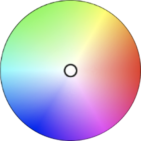

<app-loader [show]="loading"></app-loader>
<section class="filter-sidebar pt-5">
   <div class="container-fluid">
      <div class="row">
         <div class="mainDiv">
            <div id="main">
               <button class="openbtn flexible" (click)="openNav()">
                     
                  <span>Advanced settings</span>
                  </button>
            </div>
            <div id="main-sidebar" class="sidepanel closeBtn">
               <div class=" sidebarList pb-5">
                  <h6>Sort by</h6>
                  <ul class="flexible pt-2 pb-2 sideList btn-group" role="group" aria-label="Basic example">
                     <li class="mr-2">
                        <input type="radio" class="btn-check" (change)="createQuery('relevant')" name="btnradio"
                           id="btnradio1" autocomplete="off" checked> <!--  (click)="createQuery('relevant')" -->
                        <label class="btn btn-outline-primary" for="btnradio1">Most Relevant</label>
                     </li>
                     <li>
                        <input type="radio" class="btn-check" (change)="createQuery('recent')" name="btnradio"
                           id="btnradio2" autocomplete="off">
                        <label class="btn btn-outline-primary" for="btnradio2">Most recent</label>
                     </li>
                  </ul>
               </div>
               <!-- <div *ngIf="sectors.length" class="sidebarList pb-3">
                  <h6>Sector</h6>
                  <ul class="flexible pt-2 pb-2 sideList btn-group" (click)=selectSector($event)>
                     <li *ngFor="let sector of sectors; let i = index" class="mr-2 mb-3">
                        <input type="checkbox" class="btn-check" id="env{{i}}" autocomplete="off">
                        <label [ngClass]="{'active': isActive('sectors', sector)}" class="btn btn-outline-primary" [attr.for]="'env'+i">{{sector}}</label>
                     </li>
                  </ul>
               </div> -->
               <div class="sidebarList file-type pb-5">
                  <h6>File type</h6>
                  <ul (click)="selectDoctype($event)" class="flexible pt-2 pb-2 sideList btn-group">
                     <li *ngFor="let fileType of metaData.system_primaryType_agg.buckets; let i = index"
                        class="mr-2 ">
                        <!-- add active class in li -->
                        <input type="checkbox" class="btn-check" id="img{{i}}" autocomplete="off">
                        <label [ngClass]="{'active': isActive('system_primaryType_agg', fileType.key)}" class="btn btn-outline-primary" [attr.for]="'img'+i">{{fileType.key}}</label>
                     </li>
                  </ul>
               </div>
               <div class="sidebarList pb-5">
                  <!-- <div class="dropdown">
               <button class="btn dropdown-toggle" type="button" id="dropdownMenuButton1" data-bs-toggle="dropdown"
                 aria-expanded="false">
                 All
               </button>
               <ul (click)="selectMimeType($event)" class="dropdown-menu " multiple aria-labelledby="dropdownMenuButton1">
                 <li><a class="dropdown-item" href="#">All</a></li>
                 <li *ngFor="let mimeType of metaData.system_mimetype_agg.buckets">
                   <a class="dropdown-item"
                     href="#">{{mimeType.key}}
                   </a>
                 </li>
               </ul>
               </div> -->
                  <h6>Format</h6>
                  <ng-multiselect-dropdown [settings]="dropdownSettings" [data]="mimeTypeData"
                  [ngModel]="searchCriteria.system_mimetype_agg"
                     (onSelect)="selectMimeType($event)" (onSelectAll)="selectMimeType($event)"
                     (onDeSelect)="deSelectFormat($event)" (onDeSelectAll)="deSelectFormat($event)"></ng-multiselect-dropdown>
               </div>

               <div *ngIf="showImageSize" class="sidebarList pb-5">
                  <h6>Width</h6>
                  <ng-multiselect-dropdown [settings]="dropdownSettings" [data]="assetWidthData"
                  [ngModel]="searchCriteria.asset_width_agg"
                     (onSelect)="selectWidth($event)" (onSelectAll)="selectWidth($event)"
                     (onDeSelect)="deSelectWidth($event)" (onDeSelectAll)="deSelectWidth($event)"></ng-multiselect-dropdown>
                  <!-- <div class="dropdown">
             <button class="btn dropdown-toggle" type="button" id="dropdownMenuButton1" data-bs-toggle="dropdown"
                aria-expanded="false">
             All
             </button>
             <ul (click)="selectWidth($event)" class="dropdown-menu" aria-labelledby="dropdownMenuButton1">
                <li><a class="dropdown-item" href="#">All</a></li>
                <li *ngFor="let width of metaData.asset_width_agg.buckets">
                   <a class="dropdown-item" href="#">{{width.key}}</a>
                </li>
             </ul>
          </div> -->
               </div>
               <div *ngIf="showImageSize" class="sidebarList pb-5">
                  <h6>Height</h6>
                  <ng-multiselect-dropdown [settings]="dropdownSettings" [data]="assetHeightData"
                  [ngModel]="searchCriteria.asset_height_agg"
                     (onSelect)="selectHeight($event)" (onSelectAll)="selectHeight($event)"
                     (onDeSelect)="deSelectHeight($event)" (onDeSelectAll)="deSelectHeight($event)"></ng-multiselect-dropdown>
                  <!-- <div class="dropdown">
                     <button class="btn dropdown-toggle" type="button" id="dropdownMenuButton1"
                        data-bs-toggle="dropdown" aria-expanded="false">
                        All
                     </button>
                     <ul (click)="selectHeight($event)" class="dropdown-menu" aria-labelledby="dropdownMenuButton1">
                        <li><a class="dropdown-item" href="#">All</a></li>
                        <li *ngFor="let ht of metaData.asset_height_agg.buckets">
                           <a class="dropdown-item" href="#">{{ht.key}}</a>
                        </li>
                     </ul>
                  </div> -->
               </div>
               <div *ngIf="showVideoSize" class="sidebarList pb-5">

                  <h6>Video Size</h6>
                  <ng-multiselect-dropdown [settings]="dropdownSettings" [data]="videoSizeData"
                  [ngModel]="searchCriteria.video_duration_agg"
                     (onSelect)="selectVideoDuration($event)" (onSelectAll)="selectVideoDuration($event)"
                     (onDeSelect)="deSelectVideoDuration($event)"
                     (onDeSelectAll)="deSelectVideoDuration($event)">
                     <!-- <span style="display: block;text-align: right;">1</span> -->
                  </ng-multiselect-dropdown>
                 
                  <!-- <div class="dropdown">
                     <button class="btn dropdown-toggle" type="button" id="dropdownMenuButton1"
                        data-bs-toggle="dropdown" aria-expanded="false">
                        All
                     </button>
                     <ul (click)="selectVieoDuration($event)" class="dropdown-menu"
                        aria-labelledby="dropdownMenuButton1">
                        <li><a class="dropdown-item" href="#">All </a></li>
                        <li *ngFor="let ht of metaData.video_duration_agg.buckets">
                           <a class="dropdown-item" href="#">{{ht.key}}</a>
                        </li>
                     </ul>
                  </div> -->
               </div>
              <!-- <div class="sidebarList pt-3">
                  <h6>Orientation</h6>
                  <ul class="flexible pt-2 pb-2 sideList btn-group " role="group" aria-label="Basic example">
                     <li class="mr-2 mb-3" style="cursor: not-allowed !important;">
                        <input type="checkbox" class="btn-check" id="vertical" autocomplete="off" disabled
                           style="cursor: not-allowed;">
                        <label class="btn btn-outline-primary" for="vertical">Vertical</label>
                     </li>
                     <li class="mb-3" style="cursor: not-allowed !important;">
                        <input type="checkbox" class="btn-check" id="horizontal" autocomplete="off" disabled
                           style="cursor: not-allowed;">
                        <label class="btn btn-outline-primary" for="horizontal">Horizontal</label>
                     </li>
                     <li class="mr-2" style="cursor: not-allowed !important;">
                        <input type="checkbox" class="btn-check" id="square" autocomplete="off" disabled
                           style="cursor: not-allowed;">
                        <label class="btn btn-outline-primary" for="square">Square</label>
                     </li>
                     <li style="cursor: not-allowed !important;">
                        <input type="checkbox" class="btn-check" id="pano" autocomplete="off" disabled
                           style="cursor: not-allowed !important;">
                        <label class="btn btn-outline-primary" for="pano">Panoramic</label>
                     </li>
                  </ul>
               </div> -->
               <!-- <div class=" sidebarList pt-3">
                  <h6>Color</h6>
                  <div class="pb-4 colorPicker">
                     
                     
                  </div>
               </div> -->

               <div class="sidebarList pb-5">
                  <h6>Updated date</h6>

                  <ng-multiselect-dropdown [settings]="dropdownSettings" [data]="modifiedDateDropDown"
                  [ngModel]="searchCriteria.dc_modified_agg"
                     (onSelect)="selectModifiedDate($event)" (onSelectAll)="selectModifiedDate($event)"
                     (onDeSelect)="deSelectModifiedDate($event)"
                     (onDeSelectAll)="deSelectModifiedDate($event)"></ng-multiselect-dropdown>


                  <!-- <div class="dropdown">
                     <button class="btn dropdown-toggle" type="button" id="dropdownMenuButton11" aria-expanded="false" data-bs-toggle="dropdown">
                        Select value
                     </button>
                     <ul class="dropdown-menu" aria-labelledby="dropdownMenuButton11">
                        <li (click)="selectModifiedDate('last24h')"><a [ngClass]="{'active': isActive('modifiedDate', 'last24h')}" class="dropdown-item" style="cursor: pointer">Last 24 hours</a></li>
                        <li (click)="selectModifiedDate('lastWeek')"><a [ngClass]="{'active': isActive('modifiedDate', 'lastWeek')}" class="dropdown-item" style="cursor: pointer">Last week</a></li>
                        <li (click)="selectModifiedDate('lastMonth')"><a [ngClass]="{'active': isActive('modifiedDate', 'lastMonth')}" class="dropdown-item" style="cursor: pointer">Last month</a></li>
                        <li (click)="selectModifiedDate('lastYear')"><a [ngClass]="{'active': isActive('modifiedDate', 'lastYear')}" class="dropdown-item" style="cursor: pointer">Last year</a></li>
                        <li (click)="selectModifiedDate('priorToLastYear')"><a [ngClass]="{'active': isActive('modifiedDate', 'priorToLastYear')}" class="dropdown-item" style="cursor: pointer">More than 1 year ago</a></li>
                     </ul>
                  </div> -->
               </div>
               <div class="resetFilter">
                  <button (click)="resetFilter()" class="btn-outline-primary">Reset Filter</button>
               </div>

               <!-- <div class="sidebarList file-type pb-3">
                  <h6>Updated date</h6>
                  <ul (click)="selectDoctype($event)" class="flexible pt-2 pb-2 sideList btn-group">
                     <li *ngFor="let fileType of metaData.system_primaryType_agg.buckets; let i = index"
                        class="mr-2">
                        <input type="checkbox" class="btn-check" id="img{{i}}" autocomplete="off">
                        <label [ngClass]="{'active': isActive('system_primaryType_agg', fileType.key)}" class="btn btn-outline-primary" [attr.for]="'img'+i">{{fileType.key}}</label>
                     </li>
                  </ul>
               </div> -->
<div class="pt-5 pb-5"></div>
            </div>
         </div>
      </div>
   </div>
</section>
